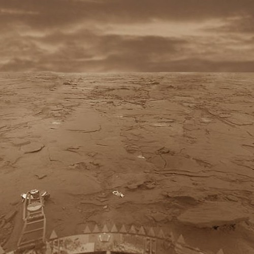

Venus
 Características físicas
Características físicas
| Masa | 4.869x10^24 kg |
| Radio | 6051 km |
| Distancia relativa al Sol | 0.72 UA |
| Tiempo en completar la órbita | 243 días |
| Temperatura media | 463ºC |
| Número de satélites conocidos | 0 |
Venus es el segundo planeta del sistema solar en orden de distancia desde el Sol, el sexto en cuanto a tamaño, ordenados de mayor a menor. Al igual que Mercurio, carece de satélites naturales. Recibe su nombre en honor a Venus, la diosa romana del amor (gr. Afrodita). Se trata de un planeta de tipo rocoso y terrestre, llamado con frecuencia el planeta hermano de la Tierra, ya que ambos son similares en cuanto a tamaño, masa y composición, aunque totalmente diferentes en cuestiones térmicas y atmosféricas (la temperatura media de Venus es de 463,85 ºC). Su órbita es una elipse con una excentricidad de menos del 1%, formando la órbita más circular de todos los planetas; apenas supera la de Neptuno. Su presión atmosférica es 90 veces superior a la terrestre; es, por tanto, la mayor presión atmosférica de las de todos los planetas rocosos del sistema solar.
Propiedades de la atmósferaVenus tiene una densa atmósfera, compuesta en su mayor parte por dióxido de carbono y una pequeña cantidad de nitrógeno. La presión a nivel de la superficie es noventa veces superior a la presión atmosférica en la superficie terrestre (una presión equivalente en la Tierra a la presión que hay sumergido en el agua a una profundidad de un kilómetro). La enorme cantidad de dióxido de carbono de la atmósfera provoca un fuerte efecto invernadero que eleva la temperatura de la superficie del planeta hasta cerca de 464 °C en las regiones menos elevadas cerca del ecuador. Esto hace que Venus sea más caliente que Mercurio, a pesar de hallarse a más del doble de la distancia del Sol que este y de recibir solo el 25% de su radiación solar (2 613,9 W/m² en la atmósfera superior y 1 071,1 W/m² en la superficie). Debido a la inercia térmica de su masiva atmósfera y al transporte de calor por los fuertes vientos de su atmósfera, la temperatura no varía de forma significativa entre el día y la noche. A pesar de la lenta rotación de Venus (menos de dos rotaciones por año venusiano, equivalente a una velocidad de rotación en el Ecuador de solo 6,5 km/h), los vientos de la atmósfera superior circunvalan el planeta en un intervalo de solo 4 días, distribuyendo eficazmente el calor. Además del movimiento zonal de la atmósfera de oeste a este, hay un movimiento vertical en forma de célula de Hadley que transporta el calor del ecuador hasta las zonas polares e incluso a latitudes medias del lado no iluminado del planeta.
 Exploración espacialLa órbita de Venus es un 28% más cercana al Sol que la de la Tierra. Por este motivo, las naves que viajan hacia Venus deben recorrer más de 41 millones de kilómetros adentrándose en el pozo gravitatorio del Sol, perdiendo en el proceso parte de su energía potencial. La energía potencial se transforma entonces en energía cinética, lo que se traduce en un aumento de la velocidad de la nave. Por otro lado, la atmósfera de Venus no invita a las maniobras de frenado atmosférico del mismo tipo que otras naves han efectuado sobre Marte, ya que para ello es necesario contar con una información extremadamente precisa de la densidad atmosférica en las capas superiores y, siendo Venus un planeta de atmósfera masiva, sus capas exteriores son mucho más variables y complicadas que en el caso de Marte. La Agencia Espacial Europea maneja una misión llamada Venus Express, que estudia la atmósfera y las características de la superficie desde la órbita. La Venus Express fue lanzada desde el Cosmódromo de Baikonur (Kazajistán) el 9 de noviembre de 2005, y pese a que se esperaba que permaneciese operativa hasta diciembre de 2009, la ESA decidió prolongar oficialmente la misión hasta 2015. La Agencia Japonesa de Exploración Espacial (JAXA) lanzó la misión PLANET-C el 20 de mayo de 2010, pero debido a que la sonda no desaceleró lo suficiente para entrar en la órbita del planeta Venus, pasó de largo y entró en órbita solar. Después de realizar la última serie de maniobras en agosto de 2015, se programó el encuentro de la sonda con Venus para el 7 de diciembre de 2015. El segundo intento resultó exitoso, situándose la sonda en órbita de Venus.